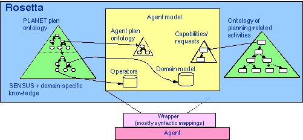
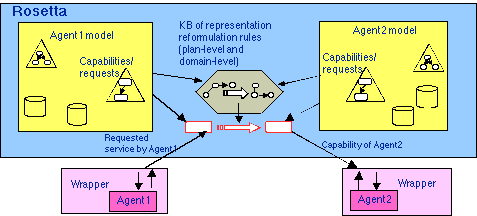

Ontology-Based Agent Communication with Rosetta
Jim Blythe, Hans Chalupsky, Yolanda Gil, Robert MacGregor
USC/Information Sciences Institute
{blythe,hans,gil,macgregor}@isi.edu
High Performance Knowledge Bases and Control of Agent-Based Systems
Problem Addressed
The purpose of this work is to use HPKB-developed ontologies and tools to address inter-agent communication issues of central relevance to CoABS. It is rare in today’s agent-based architectures to observe fluent communication between software agents built by more than one developer. Just as pairs of people who speak different languages make use of a (third-party) interpreter to translate for them, agents based on different architectures and with different assumptions (implicit or explicit) about their domains will also need an translator to mediate their communications. Today’s integrations of heterogeneous agents are done by painstakingly designing on a case by case basis a common language for the contents of the messages exchanged, and by implementing complex wrappers that translate back and forth between the agreed language and the agent’s internal representations. This is done for each pair of agents resulting in a quadratic amount of work, and is essentially done all over again when the same agent needs to communicate with a new group of agents or in a new task domain. Using a unifying ontology to support the translation process would reduce the translation overhead and make the integration of heterogeneous agents much easier, faster, and cheaper.
Overview of the Approach
We are developing a middleware tool, named Rosetta, that will support communication between heterogeneous agents using ontology merging technology that exploits several ontologies that have been developed and used in the HPKB program. As a testbed we will apply Rosetta to support communication of goals and plans of heterogeneous planning agents. This work will be driven by the needs of the CoABS TIEs involving planning agents as well as lessons that we and others have learned from integrating planning agents in several ARPI TIEs (e.g., TIE 97-1, TIE 97-2). We view Rosetta as a service that can be incorporated into existing multi-agent architectures to extend their communication capabilities.
The problem of translating between agents has much in common with the problem of merging knowledge taken from one knowledge base into a second knowledge base. In both cases we have sentence structures that must be transformed so that their meaning with respect to the sender’s environment will be preserved as much as possible when interpreted in the receiver’s environment. Rosetta’s architectural goal is to assume most of the burden of translation, so that wrapper code needed to make an agent conform to Rosetta’s interfacing requirements will be fairly simple and will only need to be done once per kind of agent to support communication with any other agents already interfaced with Rosetta.
Rosetta will maintain models of each agent’s ontologies, and translations will be made with reference to these models. Translation between a pair of ontologies is much simpler if the two ontologies share a common overarching ontology. In our proposal, ISI’s PLANET ontology (developed under HPKB) to represent plans will serve as the common superstructure for constructing models of each agent’s own planning ontology. We will choose a broad-coverage ontology (e.g., ISI’s SENSUS or the HPKB Upper-Ontology) as the framework for constructing Rosetta’s models of individual agent domains. We are assuming that for this proposal the domain models will be narrow in scope, to keep the amount of modeling work within reasonable bounds. ISI’s new Morph system for ontology merging developed under HPKB will be used to support the alignment of the agent’s individual ontologies with the unifying ontologies. Once this is done, Rosetta will be able to map individual terms used by an agent into the other agent’s vocabulary.
Mapping terms is not sufficient, since agents often need to exchange expressions that use different but related terms that can only be understood in the context of each agent’s individual model. For example, two agents that need to communicate transportation plans to each other may represent goals differently, one with state-based expressions such as (at <object> <new-location>) that refer to the action’s effects and the other with objective-based expressions such as (move <object> <location>) that refer to the action description. Rosetta will be able to support this translation back and forth by applying reformulation principles to these expressions using PLANET’s model of how state-based and objective-based goal expressions relate to each other and to actions. In this example, a reformulation principle could state that in order to transform a state-based expression into an objective-based expression it needs to find an action that has the state-based expression as a primary effect. Other reformulation principles relevant to planning tasks include transforming causal relations into temporal precedence relations (useful for generative planning agents to send plans to scheduling agents, for example), selecting subsets of planning task relations (useful for agents that represent complex task relations to send plans to agents that only use, for example, supertask/subtask relations). We are supporting this capability using the OntoMorph rewrite system, by expressing these reformulation principles as rewrite rules. The OntoMorph rewriter is specialized for the task of translating between different syntaxes and representations.
We demonstrated a prototype of Rosetta at a CoABS PI meeting on June of 1999. The demo example illustrates our approach and is based on the experiences of ARPI’s TIE 97-2. As part of this TIE, the two planning agents ForMAT and Prodigy/Analogy collaborated to aid a human user in producing a force deployment plan, or TPFDD. As the user enters goals with ForMAT, it sends them to Prodigy/Analogy. Prodigy/Analogy retrieves finished plans for similar goals from its case base and identifies transformations to make the plans applicable to the new situation. This information is sent to ForMAT and used to provide guidance to the user.
Since ForMAT and Prodigy/Analogy were designed separately, they used different languages to describe goals, operators and plans, and a significant effort was spent providing translations to allow them to communicate. For example, ForMAT used an objective-based representation of goals, eg "send-brigade (force brigade21) (location Ryad)" while Prodigy used a state-based representation, eg "at-location brigade21 Ryad". Rosetta could be used to significantly ease the work in providing such translations between planning agents.
In the first step, the agents register their representations and capabilities with Rosetta, which then creates a model of the agent. The model has four components: (1) the agent’s plan ontology as a specialization of a subset of PLANET, (2) the agent’s capabilities and the requests it might send, modelled using an ontology of planning-related tasks, (3) a knowledge base describing the operators known to the agent in terms of its plan ontology and PLANET, and (4) a model of the agent’s domain terms, including object types and predicates. The last two are described in terms of a domain-dependent component of the plan ontology stored in Rosetta.

Figure 1: An agent is registered with Rosetta
Once agents are registered, Rosetta can perform the translations needed to allow them to communicate by reformulating the request of the first agent until it matches the capabilities of the second. In this case, ForMAT sends the request "find candidate-plans for goals similar to objective-based goal ‘send brigade21 to Ryad’". The request is expressed in the PLANET ontology via a wrapper on ForMAT that makes simple syntactic changes. This does not directly match a capability in Prodigy/Analogy since it requires state-based goals, but Rosetta’s knowledge base of planning reformulations includes one that transforms an objective-based goal to a state-based goal by substituting the primary effect of the operator named in the objective. This, along with a domain-level mapping of Ryad to Ryad-airport, yields the request "find candidate-plans for goals similar to state-based goal ‘is-deployed brigade21 Ryad-airport’". This matches Prodigy/Analogy’s capability and is sent to the agent in the PLANET language, then translated into Prodigy’s internal language by its wrapper. Finally, when Prodigy/Analogy sends matching plans and transformations back to ForMAT, Rosetta can translate them into a representation that ForMAT will understand via its wrapper.

Figure 2: Rosetta uses a reformulation rule to translate from a request of one agent to the capability of another.
We are currently working on using Rosetta as a translator for the CoABS Teamcore TIE, where agents communicate with each other in order to solve a Non-combatant Evacuation Operation (NEO) planning task.
Benefits
Rosetta’s approach will reduce enormously the per-agent implementation overhead, since each agent only needs to develop a single interface to Rosetta and it automatically can communicate with any other agent within the architecture. This work will make it easier to scale up agent integration architectures to support communication between large amounts of heterogeneous agents.
References
Hans Chalupsky. "OntoMorph: A Translation System for Symbolic Knowledge". In Proceedings of the Seventh International Conference on Principles of Knowledge Representation and Reasoning (KR-2000), Breckenridge, CO, April 2000.
Jim Blythe, Yolanda Gil, Hans Chalupsky, and Robert MacGregor. "Supporting Translation Among Planning Agents". Internal project report, in preparation.
Yolanda Gil and Jim Blythe. "PLANET: A Shareable and Reusable Ontology for Representing Plans". To appear in the AAAI-2000 Workshop on Representational Issues for Real-World Planning Systems, Austin, TX, July 2000.
Yolanda Gil. "An Analysis of the CoABS TIE-1 Messages: Opportunities and Challenges for Agent Translation Services". Internal Project Report, in preparation.
Acknowledgements
This work is funded by the Defense Advanced Research Projects Agency as a Technology Integration Experiment between the Control of Agent-Based Systems program and the High Performance Knowledge Bases Program.